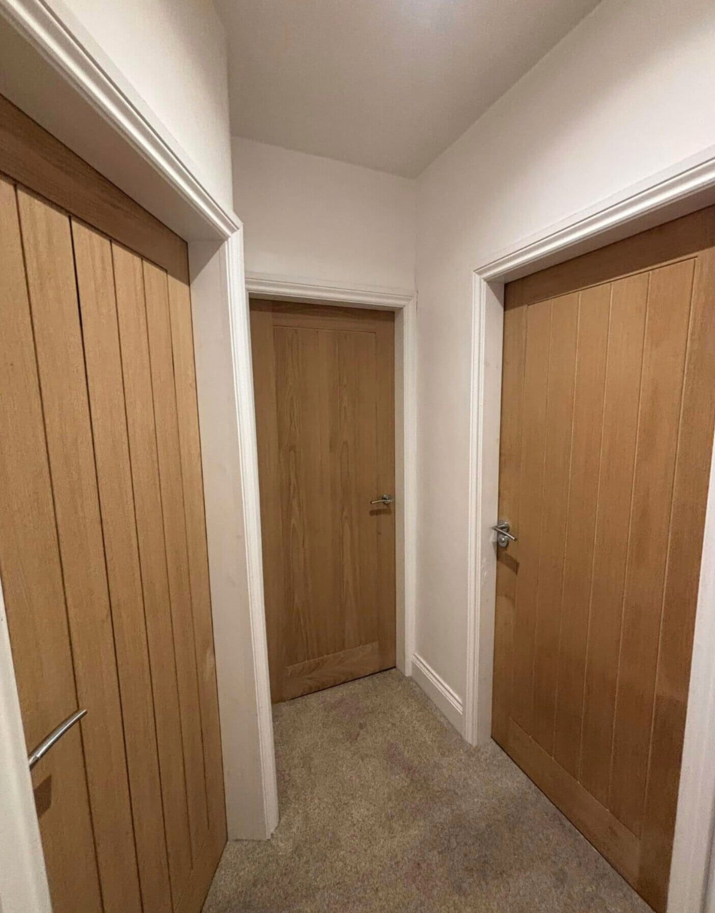

Bespoke Joinery
& Carpentry Solutions
From foundational 1st fix timber framing to the flawless precision of 2nd fix finishes. Elevate your property with custom media walls, staircases, internal doors, and decorative panelling.

18+ Years
Experience
The Mark of True Quality.
Joinery is the very heart of what we do. While other firms sub-contract their finishing work, Tom Cutts Joinery & Building is built upon a foundation of master carpentry and an uncompromising dedication to detail.
With over 18 years of hands-on and managerial experience, we understand that the final 2nd fix joinery—the way a door hangs, the seamless mitre of an architrave, or the flawless integration of a bespoke media wall—is what truly defines the standard of your home.
Whether you require intricate decorative wall panelling for a heritage property or high-volume 1st fix structural joinery for a commercial site, we bring the same level of expertise and exactness to every single project across Colne, Burnley, Pendle, and the Ribble Valley.
Comprehensive Joinery Solutions
We cover every aspect of domestic and commercial joinery, delivering exceptional results from the structural skeleton to the aesthetic finish.
1st Fix Joinery
The structural backbone of any build. We construct robust timber stud walls, install floor joists, frame out roofs, and fit staircases prior to plastering, ensuring absolute structural integrity.
2nd Fix Joinery
The visible finish. Expertly hanging internal doors, fitting skirting boards, fixing architraves, and installing window boards with perfectly tight joints and a flawless finish.
Custom Media Walls
Transform your living room with a bespoke media wall. Custom-built timber frames designed to perfectly house your panoramic electric fire, television, and hidden cabling.
Staircases & Balustrades
Whether it's the installation of a completely new structural staircase or modernizing an existing flight with contemporary oak handrails and glass balustrades.
Decorative Wall Panelling
Add texture and character to hallways, bedrooms, and dining spaces. We design and install bespoke wainscoting, acoustic slats, and traditional decorative panelling.
Fitted Storage Solutions
Maximize your space with built-in cupboards, under-stair storage, and bespoke fitted wardrobes tailored exactly to the contours and alcoves of your home.
The Tom Cutts Standard
Quality joinery requires patience, the right tools, and an eye for perfection. We do not rush our finishing works. Every architrave is perfectly mitred, every door operates smoothly, and every media wall is built square and true.
-
Fully Qualified & Insured
Backed by up to £5 million public liability insurance for total peace of mind.
-
Premium Timber Selection
We source the highest quality softwoods and hardwoods locally to ensure longevity and a premium finish.
-
Clean & Respectful
We treat your property with respect, ensuring dust is minimized and the workspace is kept tidy throughout.

Joinery FAQs
1st fix joinery involves all the structural and hidden work done before plastering takes place. This includes erecting stud walls, laying floor joists, fitting roof trusses, and installing door frames. 2nd fix joinery is the finishing work done after plastering, which includes hanging internal doors, fitting skirting boards, architraves, and decorative wall panelling.
Yes, custom media walls are one of our specialties. We handle the custom timber studwork, board it, and integrate any size of electric fireplace and flat-screen TV. We also manage the hidden cable routing and can build bespoke illuminated shelving into the alcoves.
Absolutely. We are fully equipped for large-scale commercial site work. We frequently partner with developers, housing associations, and local councils to provide high-volume 1st and 2nd fix joinery for new build developments and commercial fit-outs.
Ready to Upgrade Your Interiors?
Contact Tom today to arrange a free site visit. Whether it's replacing all your internal doors or designing a striking new media wall, we're ready to deliver exceptional results.